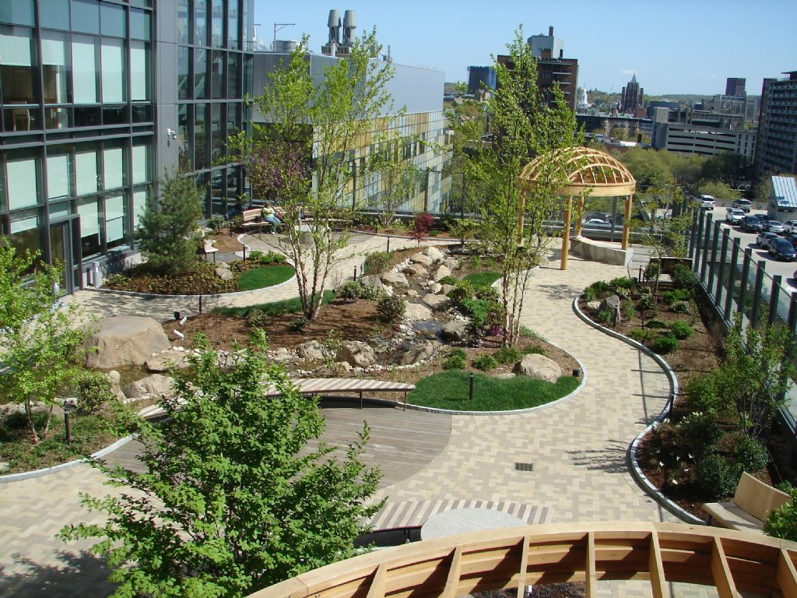
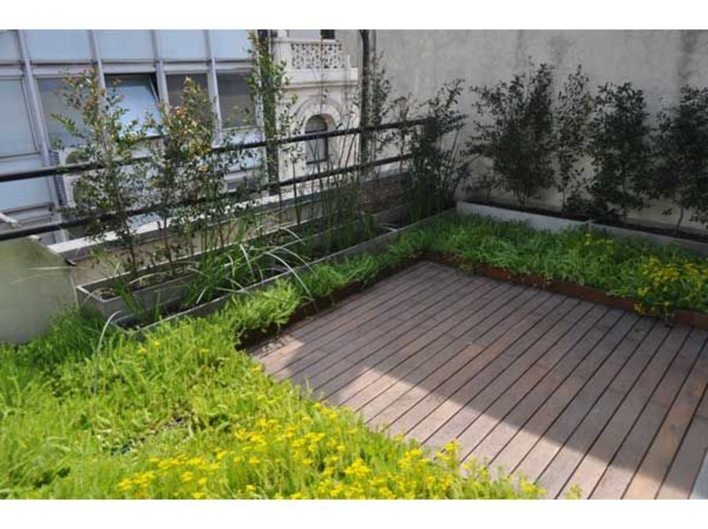
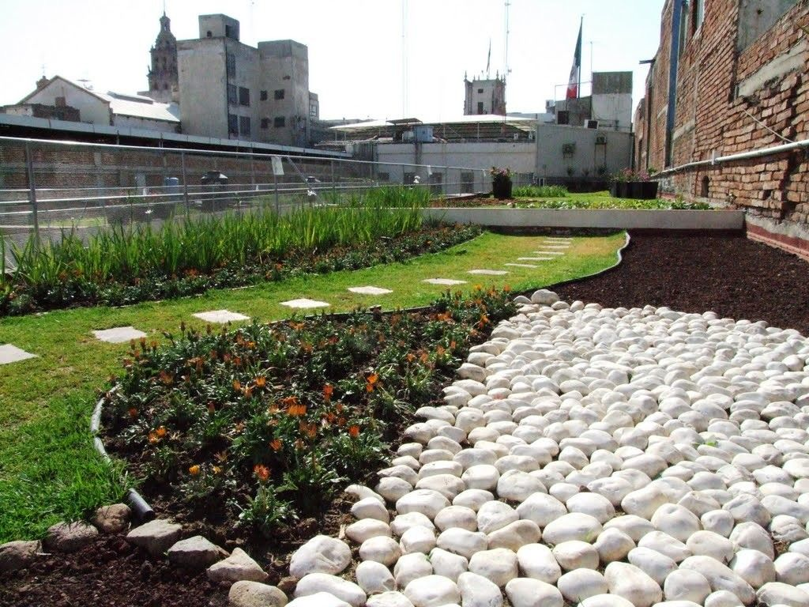
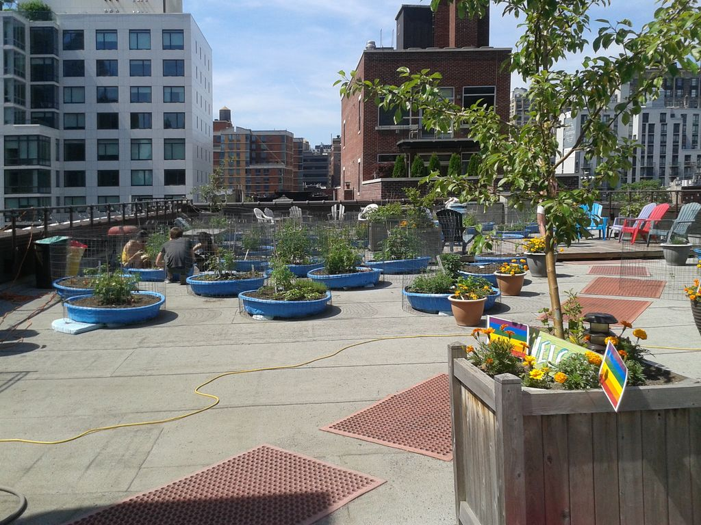
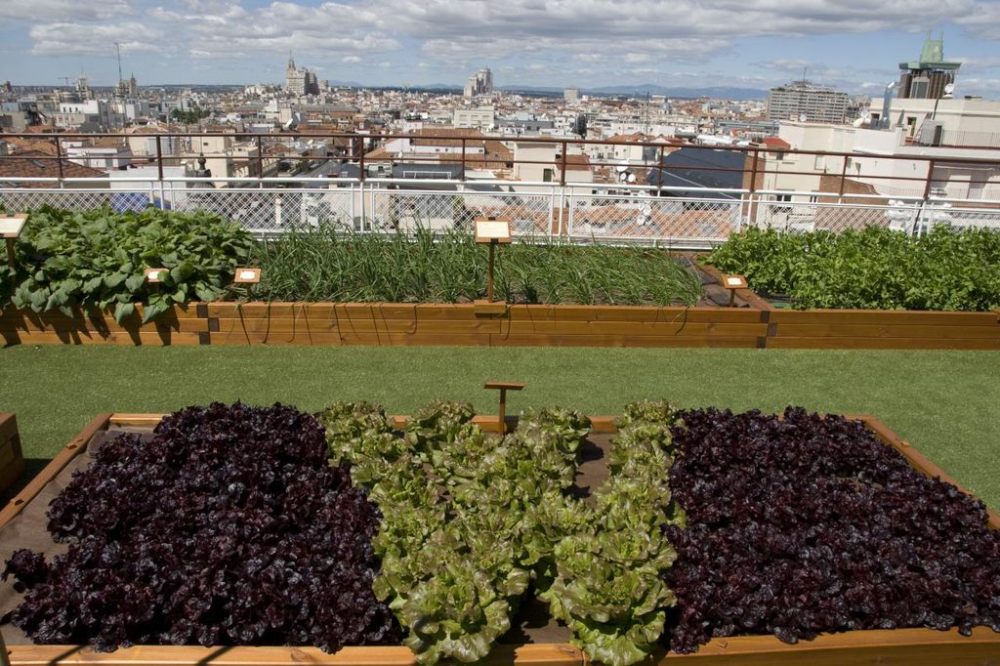
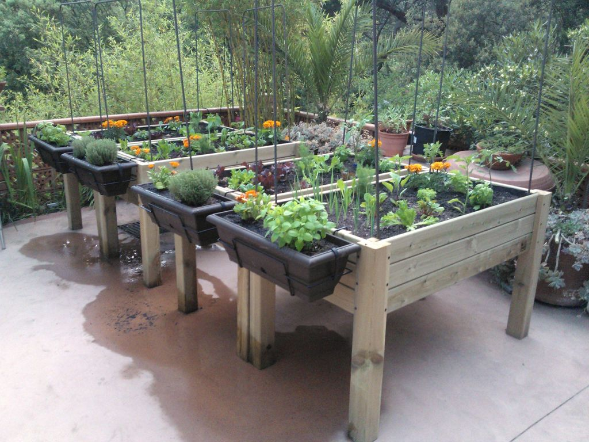

¿Qué es una terraza verde?
Un techo verde, terraza verde o cubierta ajardinada es el techo de un edificio que está parcial o totalmente cubierto de vegetación, ya sea en suelo o en un medio de cultivo apropiado. Se refiere en cambio a tecnologías usadas en los techos para mejorar el hábitat o ahorrar consumo de energía, es decir tecnologías que cumplen una función ecológica.
Los techos verdes se clasifican según su inclinación y el tipo de enjardinado. Los techos verdes horizontales (pendiente menor o igual que 5%); de poca inclinación (pendiente entre 5 y 36%); de fuerte inclinación (pendiente entre 36 y 84%), y techos empinados (pendiente mayor o igual que 84%).
Torreón es una ciudad donde la mayoría de sus edificaciones cuentan con terracería en sistemas constructivos totalmente plano que permiten que estas se adapten fácilmente para su rápida instalación, ya que en lozas inclinadas hay que tomar medidas para evitar el deslizamiento del sustrato.



¿Por qué adaptarla?
En la actualidad, las cubiertas verdes son un componente importante en el desarrollo urbano sostenible. Gracias a las ventajas económicas y ecológicas que aportan beneficios al medio ambiente de la ciudad y a sus habitantes,
Debido que Torreón es una ciudad semidesértica de clima extremoso no lluvioso y con pocas extensiones de áreas verdes, es importante tomar en cuenta esta estrategia de espacios verdes que pueden ser aprovechados para pasar un tiempo agradable en familia, socializar con los vecinos – amigos, cultivar, descansar después del trabajo etc., a una escala mayor enriquecer la visuales urbanas aún mejor descontaminar el aire de la ciudad.
Así mismo mitigar el impacto de fuertes calores que producen enfermedades e incluso la muerte en los habitantes que no se encuentran en un estado de salud adecuado, estos espacios verdes tienen un choque positivo en la salud mental de las personas dado que son menos propensas a tener crisis de ansiedad o depresión y son más tendentes a ser físicamente activas, lo que conduce a la reducción de enfermedades e infecciones respiratorias graves como asma, entre otras.
Dado que Torreón es una zona que se caracteriza por su limitado recurso hídrico el cual se extrae del subsuelo mediante el aprovechamiento de los acuíferos y un restante proviene de aguas superficiales, esto no implica que esta problemática aumente al momento del mantenimiento de estas terrazas verdes, no obstante estas son mal gastadas en espacios públicos, vivienda etc. Es importante crear hábitos y comportamientos del ahorro y reutilización del agua, aprovechando el líquido para el riego de las terrazas verdes, generando así grandes beneficios al medio ambiente.
El establecimiento de huerto familiar es otra de las ventajas que facilitan las terrazas verdes, donde estas proveen a las familias de productos que satisfacen algunas de sus necesidades; un claro ejemplo son las salsas de chiles de distintos colores y olores que podrán obtener a un costo menor que el precio del mercado, lo cual permitirá el ahorro en el gasto familiar. Estos presentan ventajas como: cantidades suficiente para el consumo de toda la familia, producciones continuas, higiénica, sin contaminación, y producidas con un mínimo de esfuerzo personal.



Beneficios
Beneficios económicos de una cubierta vegetal
- Aislamiento: ahorro energético
- Protección contra el sol, la lluvia y los cambios de temperatura: prolonga la vida útil de la cubierta (tres veces más que sin vegetación)
- Aspecto natural: aumenta el valor de la propiedad
- Vida útil más larga: la inversión se recupera en 8 a 12 años
Beneficios medioambientales
- Aislamiento: ahorro energético
- Temperatura ambiental más baja: reducción del efecto islas de calor urbano
- Absorción de CO2: Aire más limpio
- Absorción partículas finas: Aire más limpio
- Estimulo de la biodiversidad: fomenta/ no afecta el entorno de vida de aves e insectos
- Purificación de aguas lluvias: Medio ambiente más limpio
Beneficios prácticos
- Aislamiento de ruido: más calma en el ambiente interior y exterior
- Aspecto natural: agradable a la vista, invita a la relajación
- No requiere lastre: menos trabajo al colocar el techo
Fuente: Las Ventajas de una cubierta vegetal
Por Oscar David Ely Caro. Estudiante de Arquitectura 9 semestre. Universidad del Sinú. De Canalete - Córdova - Colombia.